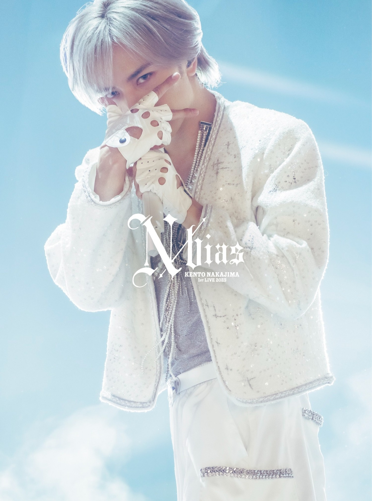

MOVIE
中島健人「N / bias」— THE CODE / 迷夢 MAKING SCENE

.
【Making work】
中島健人 Live Blu-ray & DVD
『KENTO NAKAJIMA 1st Live 2025 "N / bias"』
通常盤 Disc 2 収録の特典映像
・「THE CODE」Music Video MAKING SCENE
・「迷夢」Music Video MAKING SCENE
撮影並びにディレクションを担当させて頂きました